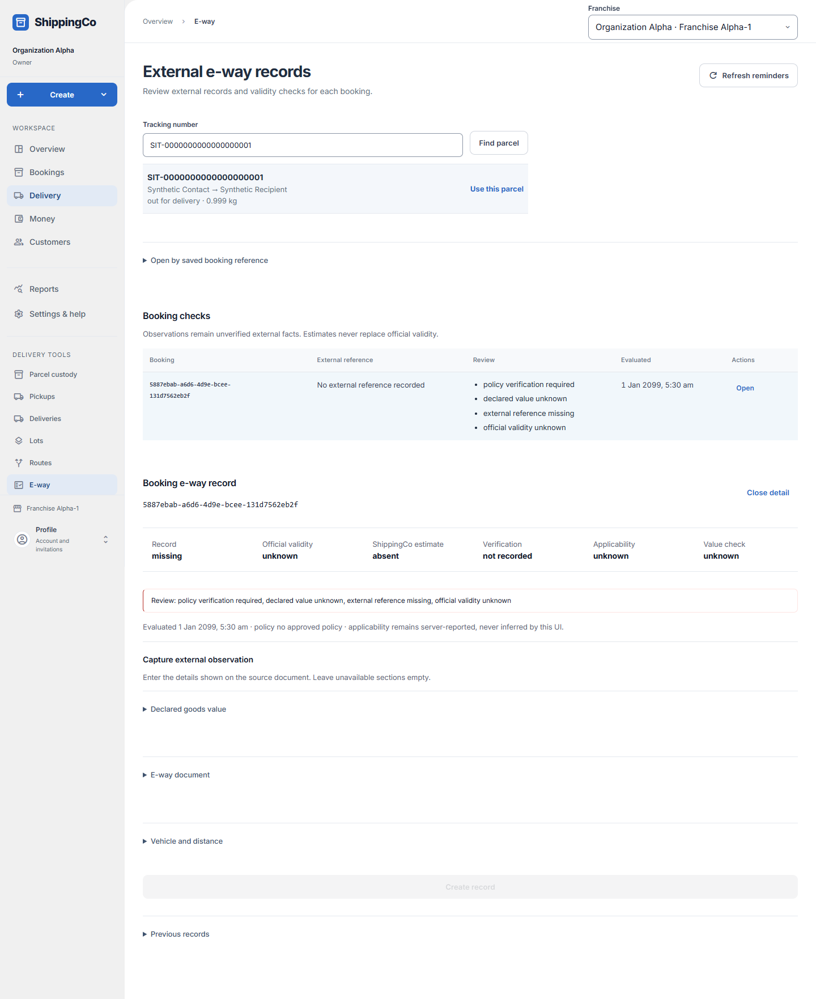

External e-way records
Keep the details of an existing external document with a booking.

Before you start
Have the source document and parcel tracking number ready. This screen records observations; it does not issue an official e-way bill.
Find the booking and open only the details you need
- Open Delivery, then E-way. In Find booking by tracking number, enter the parcel Tracking number and choose Find parcel. Check the sender, recipient, status and weight, then select Use this parcel. The app opens that parcel’s booking e-way record.
- You can also choose Open in Booking checks. Open by saved booking reference is an optional panel for an existing Booking ID; a tracking number belongs in the tracking search, not in the Booking ID field.
- For a new record, expand Declared goods value, E-way document, or Vehicle and distance. Leave unavailable sections empty. At least one section must contain a valid observation before Create record is available.
- Declared goods value needs both the rupee value and the declaration source reference. E-way document needs both External issuer and External reference when that section is used. Copy the source document rather than guessing missing dates.
- After saving, review Record, Official validity, ShippingCo estimate, Verification, Applicability and Value check separately. Reminder reasons identify items to review; no reminder is not official verification.
- Expand Correct saved details to change one target. Choose its reason, enter the supporting Reason reference and either supply replacement data or tick Clear selected field. Save correction retains previous revisions.
- Expand Calculate a travel estimate only when distance is saved and an approved policy exists. Enter the estimate start in Asia/Kolkata time and a reason reference, then Calculate with approved policy. The estimate does not change the official validity.
- Expand Previous records to review version, external reference, declared value, capture time and correction reason. Retry history reloads failed history; Load next page shows older revisions.
Quick steps
- Open E-way. Find the tracking number, review the match and select Use this parcel, or open a booking check.
- For a new record, fill at least one section. Copy the facts from the document. Select Create record.
- For a change, choose Correction target and Correction reason. Enter Reason reference. Fill only the selected section, or choose Clear selected field. Select Save correction.
- If needed, request a ShippingCo estimate using a saved distance and an approved policy.
- Review the saved record and revision history.
Fields on this screen
- Booking ID (UUID): Required to look up a booking directly. Use its record ID, not its tracking number.
- Declared value (₹): Optional section. Value stated on the source document; use rupees.
- Declaration source reference: Required if you enter declared value. The document reference stating that value.
- External issuer / External reference: Both required when entering the External document section. Use the issuer code and actual document number.
- Source reference (optional): Reference to the source evidence. Required if you enter official validity.
- Issued at (Asia/Kolkata, optional): Issue date and time from the document.
- Official valid until (Asia/Kolkata, optional): Enter only an official value. Also provide Source reference and Validity evidence reference. If issue time is given, expiry must be later.
- Validity evidence reference (optional): Required together with official validity. Identifies its supporting record.
- Vehicle number (optional): Actual vehicle number. Up to 32 letters, digits, spaces or hyphens.
- Distance km (optional): Whole kilometres, from 1 to 100,000.
- Correction target: Choose which one section or field to change.
- Correction reason: Metadata correction, source extension or declaration correction.
- Reason reference: Required for correction or estimate. Reference to the reason or supporting record.
- Clear selected field: Removes the current value of that field. Old revisions remain saved.
- Estimate starts at (Asia/Kolkata): Required date and time for the ShippingCo estimate.
What happens next
The app saves the observation and keeps old revisions. A ShippingCo estimate never changes official validity. “No reminder reasons” is not official verification.
If you get stuck
- Create disabled: enter at least one complete section. Value and declaration reference must be filled together.
- References must be short record codes, not sentences or web links. Use letters, digits and permitted separators such as hyphens.
- Estimate unavailable: saved distance and an approved policy are needed.
- The guide describes app behaviour, not the legal rules for whether your shipment needs an e-way bill.
About this guide
Checked against the current app source on 1 November 2026. Buttons depend on your access and the current record. This guide does not give extra access.